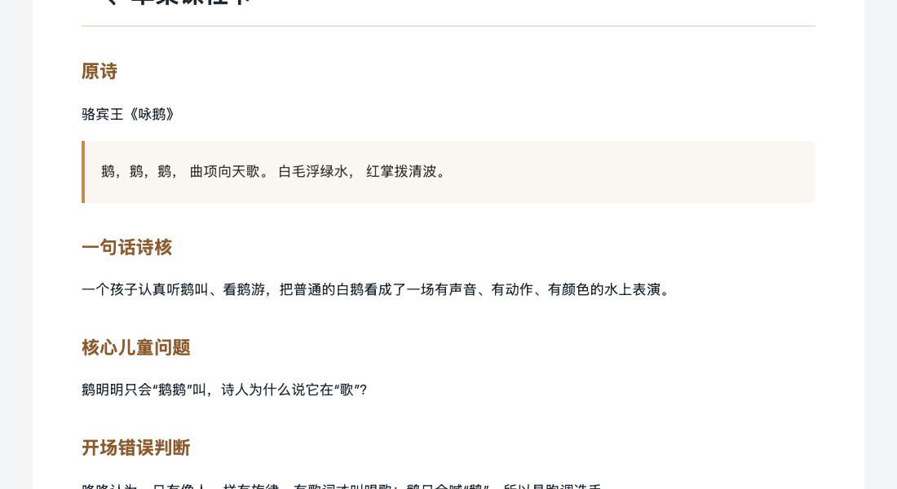
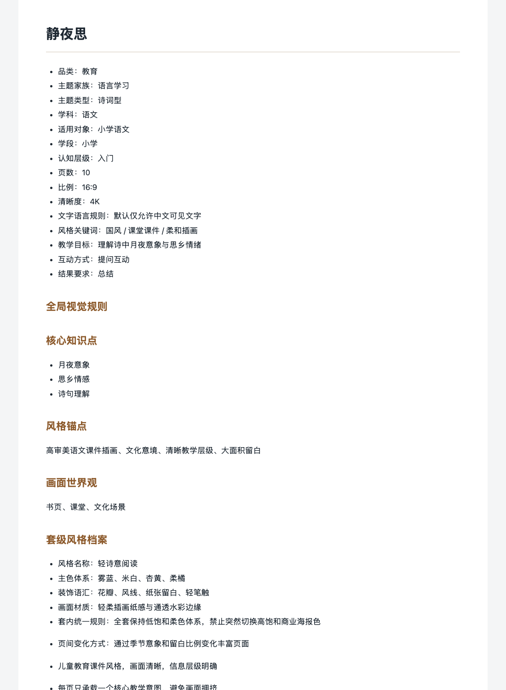
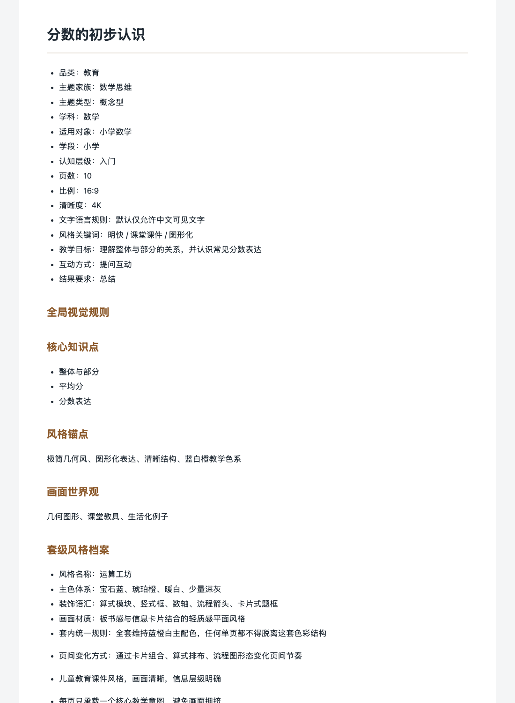

公开案例 / 教研提示词系统 / 更新于 2026-09-14数学课件第三页冒出
数学课件第三页冒出
【作者生平】的那天，
我明白了骨架不能硬套。
如果只用一句话说：第一版课件提示词只懂语文，数学一套就露馅。后来我把每门课的讲法单独拆成骨架，做成公开的迁移系统，再往下游长出英语课件生成器和古诗词教研母稿、15 秒 AI 视频分镜——同一条生产线，三个本体。

能迁移的不是模板，是骨架。语文的节奏是诗人、背景、赏析，数学是情境、推导、例题——先承认它们不同，才谈得上复用。
01
CALL SHEET / FROM ONE TEMPLATE TO A PIPELINE时间与证据分开记录
01 / 2026-04证据：edu-ppt-prompt-migrator README「它解决什么问题」
02 / 2026-04-13证据：公开仓库（2026-09-12 仍在更新）+ packs/ 分科包
03 / 2026 年中证据：cola-skills 公开仓库 english-courseware-generator 目录
04 / 2026-07-25证据：两个 Codex SKILL.md（2026-07-25）+ 校验脚本
05 / 现在证据：本机生成文稿，见下方证据墙
问题不在提示词写得不好，在于语文的页面节奏被当成了所有学科的节奏。
— CUE 01 / 失败先来：跨学科硬套，当堂翻车 · 研发时间线
失败先来：跨学科硬套，当堂翻车
第一版只有语文骨架。套到数学，第三页标题写着【作者生平】——分数没有作者生平；英语版冒出【古文讲解】，体育课直接给你【课文朗读】。问题不在提示词写得不好，在于语文的页面节奏被当成了所有学科的节奏。这段失败没有藏起来，它写在公开仓库 README 的第一屏。
第二版：给每个学科单独拆骨架
仓库 loki2046-mao/edu-ppt-prompt-migrator 当天建立，README 署名赛博小熊猫 Loki，MIT 许可。六类页面类型（封面、图文并排、全图叙事、文字聚焦、互动引导、总结升华）组合出七套学科骨架：古诗词、课文、数学、英语、科普、历史人物、兴趣技能；主题家族十类，批量脚本一次可跑 30 到 500 个主题，v1 到 v2 的迁移过程单独写在 MIGRATION 文档里。
英语这条分支单独长成生成器
english-courseware-generator 收进公开的 cola-skills 合集：输入主题（IP 主题或原创主题），27 种教学组件覆盖词汇、对话、语法、练习、阅读、游戏、评估，输出直接可喂给图像模型的课件提示词，一张图就是一页课件。
再往下游：教研母稿到 15 秒视频分镜
本机 Codex 生产线落了两个配套 Skill：write-poetry-course-mother-script 把一首古诗写成 7—9 岁儿童可送教研审核的完整动画课程母稿；convert-poetry-script-to-ai-storyboards 只接受已审核母稿，转成 ChatGPT Image 故事板和 Seedance 多镜头的 15 秒视频生产稿。审核门槛写死在 Skill 里：稿子没标「已教研审核」就不开工。
真实产出：从《静夜思》课件到《咏鹅》母稿
2026 年 4 月的批量产物里留着真实的课件提示词包（语文《静夜思》、数学《分数的初步认识》等十余科）；古诗词线上有《咏鹅》教研完整母稿 V4，五分钟时长版本，审核状态老实标注「待教研审核」。
02

EVIDENCE 01《咏鹅》教研母稿 V4 · 真实文稿五分钟 AI 友好版：单集课程卡、诗核、儿童问题、诗境任务、知识支点对照表都在；审核状态如实写「待教研审核」，不假装已经过审。REAL SCRIPT / V4 · RENDERED 2026-09-14 EVIDENCE 02《静夜思》课件提示词包 · 真实生成输出语文骨架下的逐页提示词：页数、比例、清晰度、教学目标先定死，再进入逐页画面规则。2026 年 4 月批量产物。REAL OUTPUT / 2026-04 EVIDENCE 03《分数的初步认识》· 数学骨架输出同一套系统换到数学：情境导入、概念定义、公式推导的节奏，没有再冒出作者生平。REAL OUTPUT / 2026-04
REAL ARTIFACTS / 每张图只说明一件事骨架真的能换学科，
骨架真的能换学科，
母稿真的能写到送审。
三张图都来自真实生成产物，内容是公开安全的教研材料，用中性文档视图渲染。


03
ALREADY PROVED WORKING, NOT FINISHED NOT CLAIMED
已经做到
- 公开仓库 edu-ppt-prompt-migrator（MIT，README 署名，2026-04-13 起）
- 七套学科骨架 + 六类页面类型 + 批量脚本（30—500 主题）
- english-courseware-generator 27 种教学组件随公开合集发布
- 真实生成的课件提示词包与《咏鹅》教研母稿 V4
能用但仍需维护
- 提示词出图仍要人工拿去生成工具，一步出片不存在
- 母稿有教研审核门槛，《咏鹅》仍标「待教研审核」
- 新学科、新主题家族加进来时，骨架要单独拆，不能自动长
没有证明
- 没有成片动画或上线课程数据，母稿和分镜不等于成片
- 批量生成 30—500 主题指提示词批量，不指成品质量批量达标
- 不宣称生成的课件可直接顶替教师备课判断